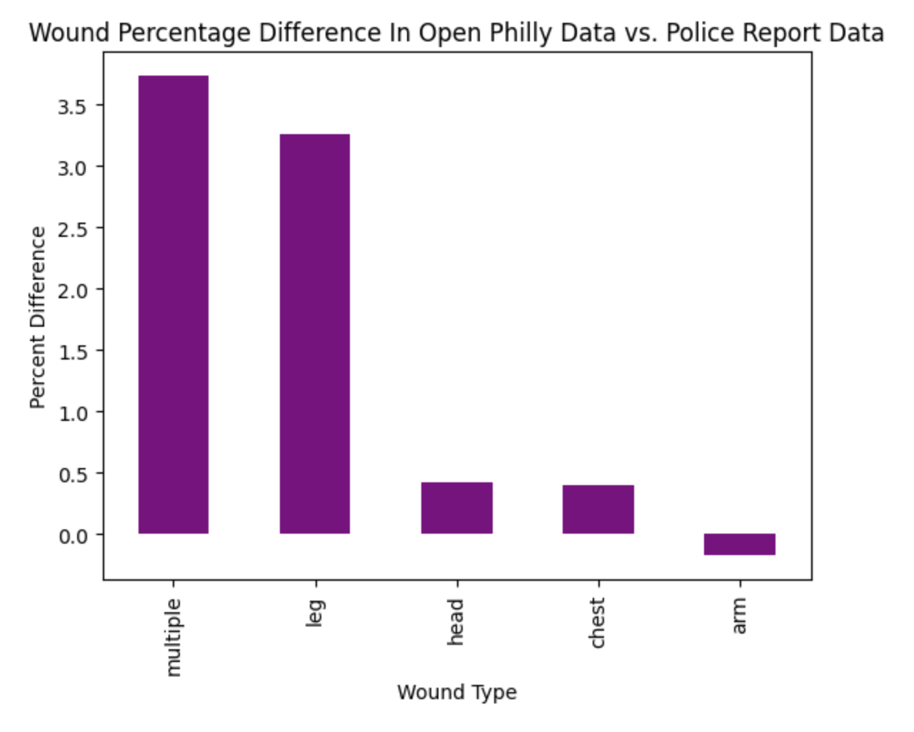
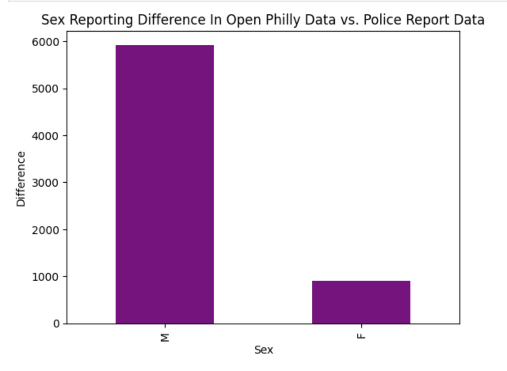

Introduction:
In this analysis, I explore two datasets of shooting incidents in Philadelphia to better understand how violence is recorded and represented across different sources. Both datasets include detailed information about each incident, such as wound type and whether the shooting was officer-involved. Because they capture similar events within the same city, they provide a strong opportunity to compare how consistently key details are reported.
Rather than focusing on the number of incidents alone, this blog examines how the two datasets differ in their descriptions of harm. I analyze the distribution of wound types and officer involvement, and then measure the differences between them to evaluate consistency and potential discrepancies. By comparing these patterns, the goal is to understand whether both datasets tell the same story about shootings in Philadelphia—or if differences in reporting may influence how the data is interpreted.
Understandbly, these two data sets display some similar and some different gun violence events. This is the main point of the analysis. What is being reported in one data set and not another.
Top Gun Shot Wounds in Philadelphia Across Data Sets
While exploring this data, one of the most prominent points was wounds being reported. The two data sets show similar numbers for wound reporting, althouht they are slightly different.

Looking at this graph, it is clear that “multiple” and “leg” have the highest percentage differences. This could be for many reasons. “Multiple” makes sense in that it can be hard to keep track of multiple elements to a patient. “Leg” most likely could have such a high differnece as well because the leg is a common place to shoot a victim without killing them, so they are immobile. “Head” and “Chest” have a lower percentage difference likely because those are fatal shots. It is more clear to people who collect this data when these wounds are present because they leave such an impact.
This shows that perhaps when it comes to data collection, the observations being easier to observe may leave an impact on the data being collected. As a result, more visible or obvious characteristics may be recorded more consistently, while less clear details are subject to variation or omission. This can ultimately shape the patterns we see in the data, influencing how we interpret and respond to these events.
Reporting the Sex of Victims Between Two Data Sets
To further examine the consistency between the two Philadelphia shooting datasets, I analyzed the distribution of sex among individuals involved in the incidents. Sex is a demographic variable that is typically straightforward to observe and record, making it a useful benchmark for evaluating data reliability. If both datasets are capturing similar populations, we would expect the proportions of male and female individuals to be relatively consistent across sources. By comparing these distributions, we can assess whether both datasets are aligned in their basic demographic reporting.
